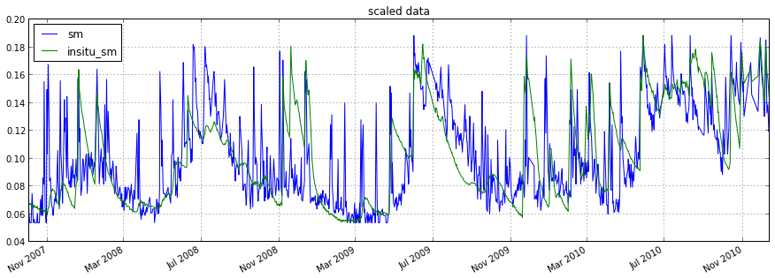
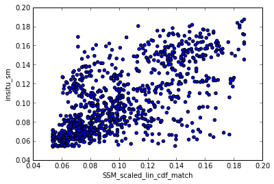
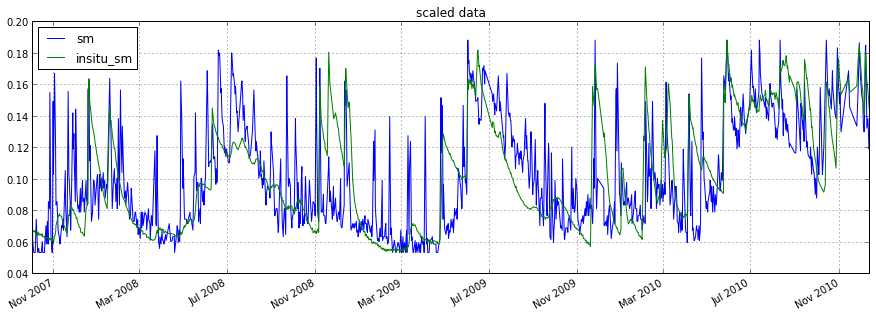
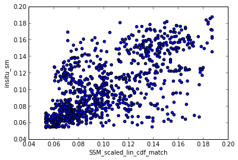

Examples¶
Reading and plotting ASCAT data¶
This example program reads and plots ASCAT SSM and SWI data with different masking options. It can be found in the /bin folder of the pytesmo package under the name plot_ASCAT_data.py.
In[1]:
import pytesmo.io.sat.ascat as ascat
import os
import matplotlib.pyplot as plt
In[2]:
#I've downloaded my ASCAT data to a folder on my D drive
path_to_ascat_ssm_data = os.path.join('D:\\','small_projects','cpa_2013_07_userformat_reader',
'data','ASCAT_SSM_25km_ts_WARP5.5_R0.1','data')
path_to_ascat_swi_data = os.path.join('D:\\','small_projects','cpa_2013_07_userformat_reader',
'data','ASCAT_SWI_25km_ts_WARP5.5_R0.1','data')
#path to grid definition file, default name TUW_W54_01_lonlat-ld-land.txt
path_to_grid_definition = os.path.join('D:\\','small_projects','cpa_2013_07_userformat_reader',
'data','auxiliary_data','grid_info')
#path to advisory flags from FTP Server
path_to_adv_flags = os.path.join('D:\\','small_projects','cpa_2013_07_userformat_reader',
'data','auxiliary_data','advisory_flags')
In[3]:
#init the ASCAT_SSM reader with the paths
ascat_SSM_reader = ascat.Ascat_SSM(path_to_ascat_ssm_data,path_to_grid_definition,
advisory_flags_path = path_to_adv_flags)
In[4]:
lon, lat = 16, 48
#reads ssm data nearest to this lon,lat coordinates
ssm_data_raw = ascat_SSM_reader.read_ssm(lon,lat)
#plot the data using pandas builtin plot functionality
ssm_data_raw.plot()
plt.show()

In[5]:
#read the same data but mask observations where the SSF shows frozen
#and where frozen and snow probabilty are greater than 20%
ssm_data_masked = ascat_SSM_reader.read_ssm(lon,lat,mask_ssf=True,mask_frozen_prob=20,mask_snow_prob=20)
#plot the data using pandas builtin plot functionality
#this time using a subplot for each variable in the DataFrame
ssm_data_masked.plot(subplots=True)
plt.show()
In[6]:
#plot raw and masked SSM data in one plot to compare them
ssm_data_raw.data['SSM'].plot(label='raw SSM data')
ssm_data_masked.data['SSM'].plot(label='masked SSM data')
plt.legend()
plt.show()
In[7]:
ascat_SWI_reader = ascat.Ascat_SWI(path_to_ascat_swi_data,path_to_grid_definition,
advisory_flags_path = path_to_adv_flags)
#reads swi data nearest to this lon,lat coordinates
#without any additional keywords all unmasked T values and
#Quality flags will be read
swi_data_raw = ascat_SWI_reader.read_swi(lon,lat)
#plot the data using pandas builtin plot functionality
swi_data_raw.plot()
plt.show()

In[8]:
#read the same data but this time only SWI with a T value
#of 20 is returned
swi_data_T_20 = ascat_SWI_reader.read_swi(lon,lat,T=20)
#plot the data using pandas builtin plot functionality
#this time using a subplot for each variable in the DataFrame
swi_data_T_20.plot(subplots=True)
plt.show()

In[9]:
#you can also mask manually if you prefer
swi_data_T_20.data = swi_data_T_20.data[swi_data_T_20.data['frozen_prob'] < 10]
swi_data_T_20.plot(subplots=True)
plt.show()

Reading and plotting data from the ISMN¶
This example program chooses a random Network and Station and plots the first variable,depht,sensor combination. To see how to get data for a variable from all stations see the next example.
It can be found in the /bin folder of the pytesmo package under the name plot_ISMN_data.py.
In[1]:
import pytesmo.io.ismn.interface as ismn
import os
import matplotlib.pyplot as plt
import random
In[2]:
#path unzipped file downloaded from the ISMN web portal
#on windows the first string has to be your drive letter
#like 'C:\\'
path_to_ismn_data = os.path.join('D:\\','small_projects','cpa_2013_07_ISMN_userformat_reader',
'header_values_parser_test')
In[3]:
#initialize interface, this can take up to a few minutes the first
#time, since all metadata has to be collected
ISMN_reader = ismn.ISMN_Interface(path_to_ismn_data)
#plot available station on a map
ISMN_reader.plot_station_locations()

In[4]:
#select random network and station to plot
networks = ISMN_reader.list_networks()
print "Available Networks:"
print networks
Available Networks:
['OZNET']
In[5]:
network = random.choice(networks)
stations = ISMN_reader.list_stations(network = network)
print "Available Stations in Network %s"%network
print stations
Available Stations in Network OZNET
['Alabama' 'Balranald-Bolton_Park' 'Banandra' 'Benwerrin' 'Bundure'
'Canberra_Airport' 'Cheverelis' 'Cooma_Airfield' 'Cootamundra_Aerodrome'
'Cox' 'Crawford' 'Dry_Lake' 'Eulo' 'Evergreen' 'Ginninderra_K4'
'Ginninderra_K5' 'Griffith_Aerodrome' 'Hay_AWS' 'Keenan' 'Kyeamba_Downs'
'Kyeamba_Mouth' 'Kyeamba_Station' 'Rochedale' 'S_Coleambally' 'Samarra'
'Silver_Springs' 'Spring_Bank' 'Strathvale' 'Uri_Park' 'Waitara'
'Weeroona' 'West_Wyalong_Airfield' 'Widgiewa' 'Wollumbi' 'Wynella'
'Yamma_Road' 'Yammacoona' 'Yanco_Research_Station']
In[6]:
station = random.choice(stations)
station_obj = ISMN_reader.get_station(station)
print "Available Variables at Station %s"%station
#get the variables that this station measures
variables = station_obj.get_variables()
print variables
Available Variables at Station Evergreen
['precipitation' 'soil moisture' 'soil temperature']
In[7]:
#to make sure the selected variable is not measured
#by different sensors at the same depths
#we also select the first depth and the first sensor
#even if there is only one
depths_from,depths_to = station_obj.get_depths(variables[0])
sensors = station_obj.get_sensors(variables[0],depths_from[0],depths_to[0])
#read the data of the variable, depth, sensor combination
time_series = station_obj.read_variable(variables[0],depth_from=depths_from[0],depth_to=depths_to[0],sensor=sensors[0])
#print information about the selected time series
print "Selected time series is:"
print time_series
Selected time series is:
OZNET Evergreen -0.50 m - -0.50 m precipitation measured with TB4-0.2-mm-tipping-bucket-raingauge
In[8]:
#plot the data
time_series.plot()
#with pandas 0.12 time_series.plot() also works
plt.legend()
plt.show()
In[9]:
#we also want to see soil moisture
sm_depht_from,sm_depht_to = station_obj.get_depths('soil moisture')
print sm_depht_from,sm_depht_to
[ 0. 0. 0.3 0.6] [ 0.05 0.3 0.6 0.9 ]
In[10]:
#read sm data measured in first layer 0-0.05m
sm = station_obj.read_variable('soil moisture',depth_from=0,depth_to=0.05)
sm.plot()
plt.show()

Comparing ASCAT and insitu data from the ISMN¶
This example program loops through all insitu stations that measure soil moisture with a depth between 0 and 0.1m it then finds the nearest ASCAT grid point and reads the ASCAT data. After temporal matching and scaling using linear CDF matching it computes several metrics, like the correlation coefficients(Pearson’s, Spearman’s and Kendall’s), Bias, RMSD as well as the Nash–Sutcliffe model efficiency coefficient.
It is stopped after 2 stations to not take to long to run and produce a lot of plots
It can be found in the /bin folder of the pytesmo package under the name compare_ISMN_ASCAT.py.
In[1]:
import pytesmo.io.ismn.interface as ismn
import pytesmo.io.sat.ascat as ascat
import pytesmo.temporal_matching as temp_match
import pytesmo.scaling as scaling
import pytesmo.metrics as metrics
import os
import matplotlib.pyplot as plt
In[2]:
#set paths for ASCAT SSM
path_to_ascat_ssm_data = os.path.join('D:\\','small_projects',
'cpa_2013_07_userformat_reader','data','ASCAT_SSM_25km_ts_WARP5.5_R0.1','data')
path_to_grid_definition = os.path.join('D:\\','small_projects',
'cpa_2013_07_userformat_reader','data','auxiliary_data','grid_info')
path_to_adv_flags = os.path.join('D:\\','small_projects',
'cpa_2013_07_userformat_reader','data','auxiliary_data','advisory_flags')
In[3]:
#set path to ISMN data
path_to_ismn_data =os.path.join('D:\\','small_projects','cpa_2013_07_ISMN_userformat_reader','header_values_parser_test')
In[4]:
#Initialize readers
ascat_SSM_reader = ascat.Ascat_SSM(path_to_ascat_ssm_data,path_to_grid_definition,
advisory_flags_path = path_to_adv_flags)
ISMN_reader = ismn.ISMN_Interface(path_to_ismn_data)
In[5]:
i = 0
label_ascat='SSM'
label_insitu='insitu_sm'
In[6]:
#this loops through all stations that measure soil moisture
for station in ISMN_reader.stations_that_measure('soil moisture'):
#this loops through all time series of this station that measure soil moisture
#between 0 and 0.1 meters
for ISMN_time_series in station.data_for_variable('soil moisture',min_depth=0,max_depth=0.1):
ascat_time_series = ascat_SSM_reader.read_ssm(ISMN_time_series.longitude,
ISMN_time_series.latitude,
mask_ssf=True,
mask_frozen_prob = 5,
mask_snow_prob = 5)
#drop nan values before doing any matching
ascat_time_series.data = ascat_time_series.data.dropna()
ISMN_time_series.data = ISMN_time_series.data.dropna()
#rename the soil moisture column in ISMN_time_series.data to insitu_sm
#to clearly differentiate the time series when they are plotted together
ISMN_time_series.data.rename(columns={'soil moisture':label_insitu},inplace=True)
#get ISMN data that was observerd within +- 1 hour(1/24. day) of the ASCAT observation
#do not include those indexes where no observation was found
matched_ISMN_data = temp_match.df_match(ascat_time_series.data,ISMN_time_series.data,
window=1/24.,dropna=True)
#matched ISMN data is now a dataframe with the same datetime index
#as ascat_time_series.data and the nearest insitu observation
#temporal matching also includes distance information
#but we are not interested in it right now so let's drop it
matched_ISMN_data = matched_ISMN_data.drop(['distance'],axis=1)
#this joins the SSM column of the ASCAT data to the matched ISMN data
matched_data = matched_ISMN_data.join(ascat_time_series.data[label_ascat])
#continue only with relevant columns
matched_data = matched_data[[label_ascat,label_insitu]]
#the plot shows that ISMN and ASCAT are observed in different units
matched_data.plot(figsize=(15,5),secondary_y=[label_ascat])
plt.show()
#this takes the matched_data DataFrame and adds a column
scaled_data = scaling.add_scaled(matched_data, method='lin_cdf_match',
label_in=label_ascat,label_scale=label_insitu)
#the label of the scaled data is construced as label_in+'_scaled_'+method
scaled_ascat_label = label_ascat+'_scaled_'+'lin_cdf_match'
#now the scaled ascat data and insitu_sm are in the same space
scaled_data.plot(figsize=(15,5),secondary_y=[label_ascat])
plt.show()
plt.scatter(scaled_data[scaled_ascat_label].values,scaled_data[label_insitu].values)
plt.xlabel(scaled_ascat_label)
plt.ylabel(label_insitu)
plt.show()
#calculate correlation coefficients, RMSD, bias, Nash Sutcliffe
x, y = scaled_data[scaled_ascat_label].values, scaled_data[label_insitu].values
print "ISMN time series:",ISMN_time_series
print "compared to"
print ascat_time_series
print "Results:"
print "Pearson's (R,p_value)", metrics.pearsonr(x, y)
print "Spearman's (rho,p_value)", metrics.spearmanr(x, y)
print "Kendalls's (tau,p_value)", metrics.kendalltau(x, y)
print "RMSD", metrics.rmsd(x, y)
print "Bias", metrics.bias(x, y)
print "Nash Sutcliffe", metrics.nash_sutcliffe(x, y)
i += 1
#only show the first 2 stations, otherwise this program would run a long time
#and produce a lot of plots
if i >= 2:
break
ISMN time series: OZNET Alabama 0.00 m - 0.05 m soil moisture measured with Stevens-Hydra-Probe
compared to
ASCAT time series gpi:1884359 lat:-35.342 lon:147.541
Results:
Pearson's (R,p_value) (0.59736953256517777, 1.4810058830429653e-60)
Spearman's (rho,p_value) (0.63684906343988457, 4.8971200217989799e-71)
Kendalls's (tau,p_value) (0.45994629380576146, 4.6771942474849024e-65)
RMSD 0.0807313501609
Bias 0.00258302466701
Nash Sutcliffe 0.221824420266
 



ISMN time series: OZNET Balranald-Bolton_Park 0.00 m - 0.08 m soil moisture measured with CS615
compared to
ASCAT time series gpi:1821003 lat:-33.990 lon:146.381
Results:
Pearson's (R,p_value) (0.65811087356086551, 9.1620935528699124e-126)
Spearman's (rho,p_value) (0.65874491635978671, 4.3707663858540222e-126)
Kendalls's (tau,p_value) (0.48451720923430946, 4.6613967263363183e-117)
RMSD 0.0283269899964
Bias -0.000181669876467
Nash Sutcliffe 0.314284186192